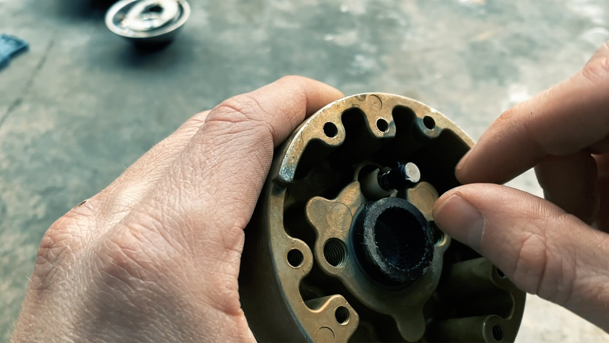
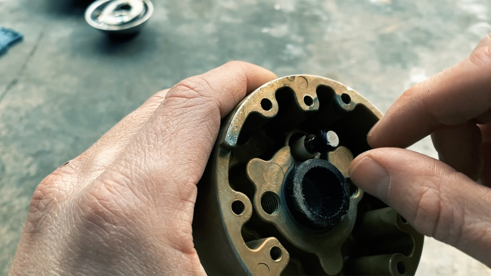

About Me
Hello, welcome to my site. I will use this site to post images of my work and write blog posts. If you have any questions or would like to buy anything, feel free to contact me.
 

Hello, welcome to my site. I will use this site to post images of my work and write blog posts. If you have any questions or would like to buy anything, feel free to contact me.
For this project, we will use 1/4″ x 3/4″ x 8″ mild steel. This lightweight stock is easy to work with and will make a lightweight set of tongs that work well for holding light stock. Using slightly thicker 5/16″ x 3/4″ stock would make a very nice set of tongs for general work.